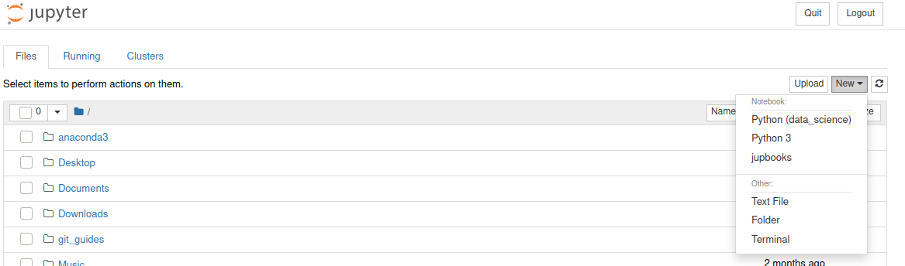

Introduction to Python¶
In this second workshop we’ll take our first look at programming in Python. We’ll cover the key data types (including NumPy arrays), as well as functions, and control flow statements. You could do an entire course focused on learning Python as a general purpose programming languague. For our goal, we’re going to focus on how to use Python and some of its key libraries for data science work. The language has been around since 1991 and is named in tribute to Monty Python…
There are a couple of really good introductory books on using Python for data science that I recommend.
%%HTML
<div style="text-align: center">
<iframe width="560" height="315" src="https://youtube.com/embed/i5NelhnFbrQ" frameborder="0" allowfullscreen></iframe>
</div>
Similarities Between Python and R¶
Both Python and R are high-level interpreted languages - this means that Python and R scripts can only be run if you have a Python or R interpreter installed on the machine you’re using.
Both Python and R are typically used with libraries or packages that can hugely expand the functionality of the basic language.
When doing data science in R or Python, you’re likely using the base language plus packages such as {dplyr} and {tidyr} in R and libraries such as numpy and pandas in Python.
Reproducibility is important so you need to keep track of the packages/libraries you’re using so that you can recreate your analysis at some future point (or so that someone else can recreate your analysis).
Differences Between Python and R¶
Python is a general purpose programming language, while R is a specialised statistical programming language (although it can sometimes be used for more general programming tasks).
As a language, Python code is more readable than R code and there’s a consistency in the Python language that you don’t get in R (e.g., differences in base R vs. Tidyverse syntax vs. formula syntax). While R has backwards compatibility, Python does not (e.g., differences between Python 2.x and 3.x).
Python is an object-oriented programming language and this gives you flexibility to use methods to work with new objects.
You can do a lot more in Python than in R, but Python lacks some of the statistical model libraries that are present in R (although it has lots more machine learning libraries).
Indendation Has Meaning In Python¶
One of the biggest differences between Python and R, is that in Python indentation has meaning - in R indentation can make your scripts looks nice (but has no intrinsic meaning). In Python, indentation is used in place of { } in order to group together statements.
Consider a for loop to print the numbers 1 to 10.
In Python:
for i in range(1,11):
print(i)
In R:
for (i in 1:10) {
print(i)
}
Python Uses Zero-Based Indexing¶
In Python, indexing starts at 0 but in R indexing starts at 1. In practice, this means that if we want to reference an element in a list (for example) we need to remember the initial element is at position 0 in Python, but position 1 in R.
So, to refer to the initial element ('apple') we need to do the following:
In Python:
my_list = ['apple', 'banana', 'pear']
my_list[0]
In R:
my_list <- list('apple', 'banana', 'pear')
my_list[1]
In both these cases the output will be apple.
%%HTML
<div style="text-align: center">
<iframe width="250" height="250" src="https://giphy.com/embed/LmNwrBhejkK9EFP504" frameBorder="0" class="giphy-embed" allowFullScreen></iframe><p><a href="https://giphy.com/gifs/memecandy-LmNwrBhejkK9EFP504">via GIPHY</a></p>
</div>
Data Types and Variable Assignment¶
%%HTML
<div style="text-align: center">
<iframe width="560" height="315" src="https://youtube.com/embed/DxZ0eTWYmnE" frameborder="0" allowfullscreen></iframe>
</div>
We will be writing our code using a Jupyter Notebook. On macOS, you are going to be entering the commands below that start up a Jupyter Notebook using Terminal, and on Windows you will be using the Anaconda Prompt. Jupyter Notebooks allows us to write text in Markdown format (as I have written in this block), alongside the Python code and output. If you have completed the previous workshop, you should be able to launch a Jupyter Notebook on your own machine. Make sure you have a conda environment activated (type conda activate if you don’t). Set up a new Notebook by typing jupyter notebook in a terminal window. This should launch Jupyter Notebooks running in your browser.
conda activate
jupyter notebook
Start a new Python script in your Python (data_science) environment.

Some of the most common data types in Python are integer (int) and floating point (float) for representing numbers, and strings (str) for representing text. We can assign values to variables - the data type is dynamically inferred by Python (in contrast to other languages such as C++ where they have to be explicitly declared). You can check what type a variable is by using type().
Try running the following two lines of Python code in your Jupyter Notebook.
my_name = 'Andrew'
print(type(my_name))
<class 'str'>
In the output, you should see that the variable my_name has been identified as type str as it is contains text.
Assigning values to variables is a key component in scripting/coding. You can use variables to store values that you need to be able to access later, and variables can be re-assigned as your script progresses (maybe you want to store temporary values in a variable). You can print the contents of a variable using the print(variable_name) function in Python. In the code below, we create two variables. The print function can take multiple arguments so we can print the values of the two variables with the line print(first_variable_name, second_variable_name).
my_favourite_number_text = 'My favourite number is:'
my_favourite_number = 25
print(my_favourite_number_text, my_favourite_number)
My favourite number is: 25
Modify the above code so that it displays the following:
25 is my favourite number.
Click the button to reveal answer
my_favourite_number = 25
my_favourite_number_text = "is my favourite number."
print(my_favourite_number, my_favourite_number_text)
You might have come up with a slightly different solution. It’s important to remember there are often several (sometimes many) ways to achieve the same task - even in quite simple cases.
Let’s now assign a different number to the my_favourite_number variable and change the my_favourite_number_text back to what it was originally.
my_favourite_number = 16
my_favourite_number_text = 'My favourite number is:'
print(my_favourite_number_text, my_favourite_number)
My favourite number is: 16
Lists¶
%%HTML
<div style="text-align: center">
<iframe width="560" height="315" src="https://youtube.com/embed/bINIwJnLAn4" frameborder="0" allowfullscreen></iframe>
</div>
Lists can be assigned to variables. In Python lists are indicated by square brackets, [ and ], and contain elements - often of the same type - for example, lists of integers, strings etc. Lists can also contain a mix of elements of different types (but you may want to avoid this). The next bit of code creates a list called my_numbers that contains 4 integer elements. Remember, in contrast to R, Python uses zero-position indexing. So the first element in the list is at position 0, the second at position 1 etc. We can index an element in the list using square brackets. Let’s index the second element…
my_numbers = [10, 20, 30, 40]
my_numbers[1]
20
The next list is a list of strings. How would you go about indexing the fourth element?
my_names = ['Andrew', 'Suzanne', 'Eliza', 'Seb']
Click the button to reveal answer
my_names[3]
Elements in lists can be changed (i.e., lists are mutable):
my_names[0] = 'Iggy Pop'
print(my_names)
['Iggy Pop', 'Suzanne', 'Eliza', 'Seb']
Lists can be sliced using : The following will slice from the third element to the end of the list.
my_names[2:]
['Eliza', 'Seb']
While the line below will slice from the start of the list up to (but excluding) the third element.
my_names[:2]
['Iggy Pop', 'Suzanne']
We can also specify the start and stop points of the slicing as follows.
my_names[1:3]
['Suzanne', 'Eliza']
Tuples¶
%%HTML
<div style="text-align: center">
<iframe width="560" height="315" src="https://youtube.com/embed/i5FOo0LtT9M" frameborder="0" allowfullscreen></iframe>
</div>
Tuples are like lists, except they are immutable - in other words, their contents cannot be changed later. While lists are created using square brackets, tuples are created using round brackets. But like lists, you use square brackets to reference elements in a tuple.
my_tuple = (10, 20, 30, 40)
my_tuple[3]
40
If you try to change an element in a tuple, an error will be generated.
my_tuple[3] = 5
---------------------------------------------------------------------------
TypeError Traceback (most recent call last)
<ipython-input-16-ff0b7a9231b8> in <module>
----> 1 my_tuple[3] = 5
TypeError: 'tuple' object does not support item assignment
Tuples can be sliced too. The following will slice from the start up to (but excluding) the fourth element.
my_tuple[:3]
(10, 20, 30)
How would you slice my_tuple so that it contains only the second and third elements?
Click the button to reveal answer
my_tuple[1:3]
If you wanted to, you could map the above output onto a new variable called my_sliced_tuple and use the operator == (more on this later) to check that they are the same.
my_sliced_tuple = my_tuple[:3]
my_sliced_tuple == my_tuple[:3]
True
Arrays¶
%%HTML
<div style="text-align: center">
<iframe width="560" height="315" src="https://youtube.com/embed/YvfGr8ZN5-k" frameborder="0" allowfullscreen></iframe>
</div>
An array is a data structure consisting of a collection of elements, each identified by at least one array index (or key). Arrays are core data structures in data science and machine learning. For example, you can store images as 2-dimensional arrays representing pixel brightness across the area of the image.
Data frames and tibbles in R are types of 2-dimensional arrays - data stored in rectangular format with rows and columns. Arrays don’t have to just be in two dimensions but it can be tricky imagining more dimensions…
NumPy arrays are better than inbuilt Python arrays in that they are more efficient as the arrays grow larger in size.
In the code below we’re importing the numpy package as np (this is the conventional alias for this package). We then set our randomisation seed to ensure reproducibility. Remember, computers can’t generate true random numbers so use an algorithm. We can fix the start of this algorithmic generation procedure to ensure that if we re-run our code we get the same random numbers. We then create an array of random integers from 0 (inclusively) and 10 (exclusively) that has 3 rows and 4 columns. We use the NumPy routine random and the operation randint to generate this array. We need to specify the low and high values of the range we’re sampling from, and the shape of the array (number of rows by number of columns) we are wanting to generate.
import numpy as np
np.random.seed(1234)
my_array = np.random.randint(low=0, high=10, size=(3, 4))
my_array
array([[3, 6, 5, 4],
[8, 9, 1, 7],
[9, 6, 8, 0]])
We can then check the shape of the array using .shape
my_array.shape
(3, 4)
Getting Help¶
In your Jupyter Notebook you can type help() and put in the brackets the name of the module and function you want help with. Most help files are incredibly useful and will clearly describe what a function does, what it takes as its input parameters, and what it returns in its output. Below is what I get when I ask for help with the shape operation in numpy.
help(np.shape)
Help on function shape in module numpy:
shape(a)
Return the shape of an array.
Parameters
----------
a : array_like
Input array.
Returns
-------
shape : tuple of ints
The elements of the shape tuple give the lengths of the
corresponding array dimensions.
See Also
--------
alen
ndarray.shape : Equivalent array method.
Examples
--------
>>> np.shape(np.eye(3))
(3, 3)
>>> np.shape([[1, 2]])
(1, 2)
>>> np.shape([0])
(1,)
>>> np.shape(0)
()
>>> a = np.array([(1, 2), (3, 4)], dtype=[('x', 'i4'), ('y', 'i4')])
>>> np.shape(a)
(2,)
>>> a.shape
(2,)
Variable Assignments are References (not Copies)¶
%%HTML
<div style="text-align: center">
<iframe width="560" height="315" src="https://youtube.com/embed/BnbjqxFZRlk" frameborder="0" allowfullscreen></iframe>
</div>
Assignment in Python involves creating bindings between a target and an object in computer memory - not just simple copying - this can easily trip you up if you assume that assignment creates a new copy of of the original object.
my_old_names = ['Andrew', 'Suzanne', 'Eliza', 'Seb']
my_new_names = my_old_names
print(my_new_names)
['Andrew', 'Suzanne', 'Eliza', 'Seb']
my_old_names[0] = 'this is surprising'
print(my_new_names)
['this is surprising', 'Suzanne', 'Eliza', 'Seb']
Note that in the above code we’re changing the first element in the list my_old_names but keeping the variable my_new_names the same as it was (or so we think). But if we now print my_new_names we see that this list reflects the change we made to my_old_names. This will catch you out unless you realise that both variable names are pointing to the same contents in the computer’s memory.
Functions¶
%%HTML
<div style="text-align: center">
<iframe width="560" height="315" src="https://youtube.com/embed/zvIEzvX5zEU" frameborder="0" allowfullscreen></iframe>
</div>
Python has a number of built-in functions such as print(), abs(), bin() etc. You can see the full list here. Generally, functions take an input, do something with the input, and then output the result. You can use the help() function to get help on other functions.
help(print)
Help on built-in function print in module builtins:
print(...)
print(value, ..., sep=' ', end='\n', file=sys.stdout, flush=False)
Prints the values to a stream, or to sys.stdout by default.
Optional keyword arguments:
file: a file-like object (stream); defaults to the current sys.stdout.
sep: string inserted between values, default a space.
end: string appended after the last value, default a newline.
flush: whether to forcibly flush the stream.
User-Defined Functions¶
If you find yourself writing the same chunk of code again and again, you might want to turn it into a function. For example, imagine I want to display someone’s BMI on the basis of knowing their height (in metres) and mass (in kg). The formula for BMI is: BMI = kg/m2. Let’s write a function that takes as its input someone’s weight and height, and then returns their BMI. We use def to define our function that we’re calling bmi. It takes two parameters, weight and height. Inside the body of the function it creates a new variable called bmi_value which is weight divided by height squared. The function then returns this value.
We can call the function to work out the bmi of someone with a weight of 87 kgs, and a height of 1.8 metres with with bmi(87, 1.8).
Note that in the code below we are using indentation for the body of the function. Indentation in Python is important and is meaningful (i.e., it’s not an aesthetic decision). Indentation is used to indicate a block of code. The convention is to indent each line of a block by 4 spaces (don’t use tab).
def bmi(weight, height):
bmi_value = weight/(height*height)
return bmi_value
bmi(87, 1.8)
26.85185185185185
Your challenge to write a function that calculates Cohen’s d, a common measure of effect size, for an experiment given two means of 1020 and 1000, and a pooled standard deviation (SD) of 50. The equation for Cohen’s d is:
Your function will need to take three arguments (the two means plus the pooled SD) and return the Cohen’s d value. Try that now.
One possible solution is below.
def cohen_d(mean1, mean2, sd):
effect_size = (mean1 - mean2) / sd
return effect_size
cohen_d(1020, 1000, 50)
Control Flow Statements - For Loops¶
%%HTML
<div style="text-align: center">
<iframe width="560" height="315" src="https://youtube.com/embed/vQrhJMd6Hb8" frameborder="0" allowfullscreen></iframe>
</div>
We can run the same command or chunk of code any number of times by placing it within a for loop. In the following, we print the phrase Hello world! five times. In Python, the code block within the loop that is to be repeated needs to indented.
for i in range(0, 5):
print('Hello world!')
Hello world!
Hello world!
Hello world!
Hello world!
Hello world!
We can also iterate over elements in an array using a for loop. In the following example, we iterate through the elements in our list and print each element.
my_names = ['Andrew', 'Suzanne', 'Eliza', 'Seb']
for element in my_names:
print(element)
Andrew
Suzanne
Eliza
Seb
Iterating Over an Array¶
%%HTML
<div style="text-align: center">
<iframe width="560" height="315" src="https://youtube.com/embed/Uu_jm-Ukp_U" frameborder="0" allowfullscreen></iframe>
</div>
In the same way we can iterate over lists, we can iterate over arrays row-by-row. Let’s create a 2-dimensional array called vital_stats with the weights and heights of three individuals. The first row of the array will be their weights, and the second row their heights. The third will be their names.
weights = np.array([70, 60, 90])
heights = np.array([1.67, 1.77, 1.78])
names = np.array(['Iggy', 'David', 'Lou'])
vital_stats = np.array((weights, heights, names))
print(vital_stats)
[['70' '60' '90']
['1.67' '1.77' '1.78']
['Iggy' 'David' 'Lou']]
We see that in a for loop we can iterate over the rows in our array.
for index in vital_stats:
print(index)
['70' '60' '90']
['1.67' '1.77' '1.78']
['Iggy' 'David' 'Lou']
What we really want to do is iterate over columns. Luckily there is a Transpose attribute built into NumPy arrays that produces the transposed array (i.e., columns and rows swapped).
for index in vital_stats.T:
print(index)
['70' '1.67' 'Iggy']
['60' '1.77' 'David']
['90' '1.78' 'Lou']
We can cycle through the rows of this transposed array (with the rows now corresponding to the weight, height and name of each individual), and pass these values to the bmi function that we wrote. Each person’s weight is in column 0 of the array, and each person’s height in column 1. Their name is in column 2. The following loop cycles through our NumPy array person by person and calls the bmi function for each person in the array before printing out the result (rounded to zero decimal places using the round function). Note that the elements in the array we have created are all of type str as this is the only way to represent the elements as being of the same type (which is a requirement of NumPy arrays). We can convert each number that is currently of type str to a number with float so that we can pass it to the bmi function.
for person in vital_stats.T:
weight = float(person[0])
height = float(person[1])
print(person[2], 'has a BMI of', round(bmi(weight, height)))
Iggy has a BMI of 25
David has a BMI of 19
Lou has a BMI of 28
Imagine three experiments. Each is a between participants design with two groups. For Experiments 1, 2, and 3 the mean of group 1 is always 500. For Experiments 1, 2, and 3 the means of group 2 are 485, 490, and 495 respectively. The pooled SD for all groups is 10. Write the code that will produce Cohen’s d from a numpy array that contains the means and the pooled SD for each of the three experiments.
One possible solution is below.
experiment1 = np.array([500, 485, 10])
experiment2 = np.array([500, 490, 10])
experiment3 = np.array([500, 495, 10])
all_experiments = np.array((experiment1, experiment2, experiment3))
all_experiments
def cohen_d(mean1, mean2, sd):
effect_size = (mean1-mean2)/sd
return effect_size
all_experiments[0]
for experiment in all_experiments:
mean1 = experiment[0]
mean2 = experiment[1]
sd = experiment[2]
print(cohen_d(mean1, mean2, sd))
Operators¶
%%HTML
<div style="text-align: center">
<iframe width="560" height="315" src="https://youtube.com/embed/2UphPf9kpew" frameborder="0" allowfullscreen></iframe>
</div>
The kinds of logical operators that you’ve come across in R, are also used in Python. They result in True or False. For example, for variables a and b:
Equals: a == b
Not Equals: a != b
Less than: a < b
Less than or equal to: a <= b
Greater than: a > b
Greater than or equal to: a >= b
These expressions can be used in lots of contexts including in control flow statements where evaluation of an expression determines how the control flow statement is interpreted. In Python the logical operator AND is represented by and, OR by or, and NOT by not.
a = 5
b = 6
a == b
False
a != b
True
a < b
True
a <= b
True
a > b
False
a >= b
False
You can also compare NumPy arrays element by element using logical operators as follows.
a = np.array([1, 2, 3])
b = np.array([3, 2, 1])
a == b
array([False, True, False])
a < b
array([ True, False, False])
You can also apply arithmetic operations to arrays on an element by element basis.
a + b
array([4, 4, 4])
Control Flow Statements - While Loops¶
%%HTML
<div style="text-align: center">
<iframe width="560" height="315" src="https://youtube.com/embed/dmteK2wKjv4" frameborder="0" allowfullscreen></iframe>
</div>
Code inside a while loop runs as long as the while loop evaluates to True. For example, we set a counter, i, to equal zero. The code in the while loop will run as long as the counter, i, does not equal 2. Each time we run the code in the while loop, we increment i by 1. This means that this loop will run exactly twice, each time printing the ith element in the list.
my_names = ['Andrew', 'Suzanne', 'Eliza', 'Seb']
i = 0
while i != 2:
print(my_names[i])
i += 1
Andrew
Suzanne
Control Flow Statements - Conditionals¶
%%HTML
<div style="text-align: center">
<iframe width="560" height="315" src="https://youtube.com/embed/WBDUYuQ-r7I" frameborder="0" allowfullscreen></iframe>
</div>
If statements (and the related elif and else) are conditional statements such that if they evaluate as True the associated code chunk is run, else some other code chunk is run. In the following example, the else statement catches any cases where neither the if nor elif statements evaluate as True.
my_first_number = 5
my_second_number = 6
if my_first_number < my_second_number:
print(my_first_number, 'is less than', my_second_number)
elif my_first_number > my_second_number:
print(my_first_number, 'is greater than', my_second_number)
else:
print(my_first_number, 'is equal to', my_second_number)
5 is less than 6
What do you think will happen if you set the values of both numbers to be the same - and delete the last two lines of code (i.e., the line beginning else: and the following one)?
Click the button to reveal answer
Nothing happens. The `if` statement evaluates to False, not True, as does the `elif` statement. As nothing evaluates to True (and we didn't write any code that deals with other outcomes) nothing happens.